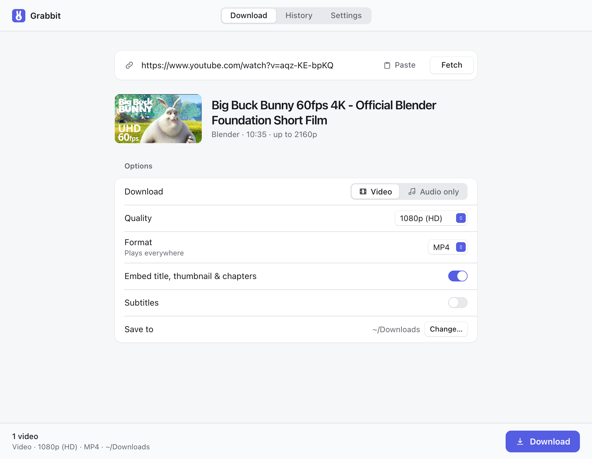

Video or audio
Save a YouTube video as MP4 that plays everywhere or MKV with the best codecs. Or keep just the audio as MP3 or M4A.
Grabbit is a free, open-source desktop app for saving YouTube videos, playlists and channels to your computer. Paste a YouTube link, pick video or audio and a quality, and download.

Save a YouTube video as MP4 that plays everywhere or MKV with the best codecs. Or keep just the audio as MP3 or M4A.
The picker lists the resolutions each YouTube video actually has. No guessing.
Several downloads at once, with live progress, cancel and retry.
Paste a playlist or channel link, see every video and choose which ones to grab. Each playlist gets its own folder.
Embed YouTube subtitles (uploaded or auto-generated), title, thumbnail and chapters straight into the file.
When a YouTube change breaks downloads, update the yt-dlp engine from inside the app. No new release needed.
Version {{version}}, released {{date}}. Free, forever.
Apple Silicon or Intel
Apple Silicon .dmg · {{size:mac-arm}} Intel .dmg · {{size:mac-x64}}M1 or newer? Choose Apple Silicon.
Windows 10 or later, 64-bit
Installer .exe · {{size:win-exe}} MSI package .msi · {{size:win-msi}}64-bit (x86_64)
AppImage {{size:linux-appimage}} Debian / Ubuntu .deb · {{size:linux-deb}} Fedora / openSUSE .rpm · {{size:linux-rpm}}Grabbit isn't signed with a paid developer certificate yet, so your system asks you to confirm once.
Open the .dmg and drag Grabbit to Applications. When you see “Apple could not verify Grabbit”, click Done. Then open System Settings → Privacy & Security, scroll down and click Open Anyway.
If SmartScreen says “Windows protected your PC”, click More info, then Run anyway.
Install the .deb or .rpm with your package manager. For the AppImage, run chmod +x on it, then open it.